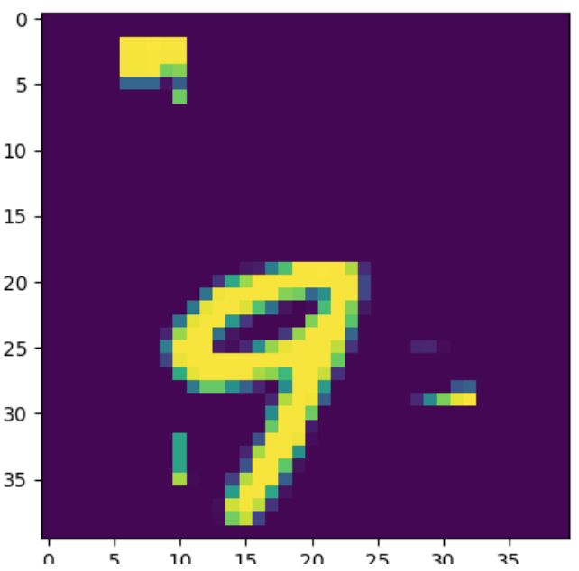
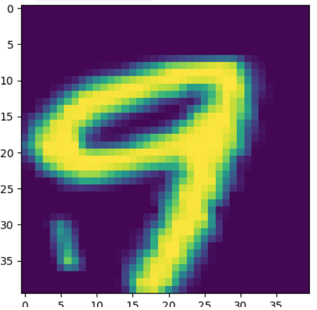
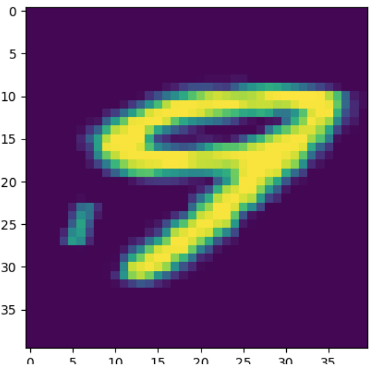
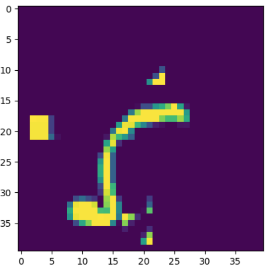
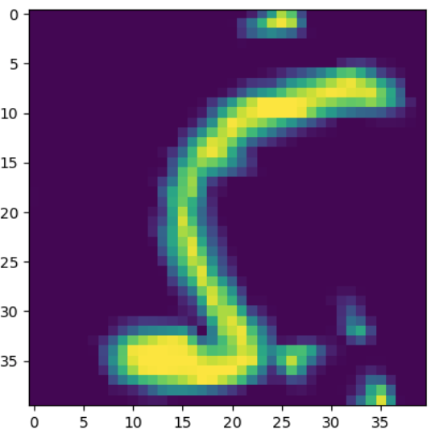
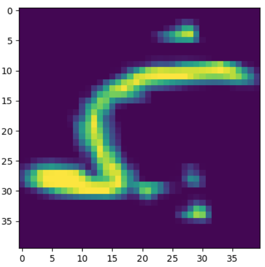
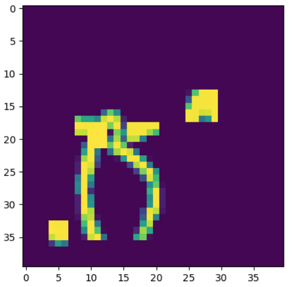
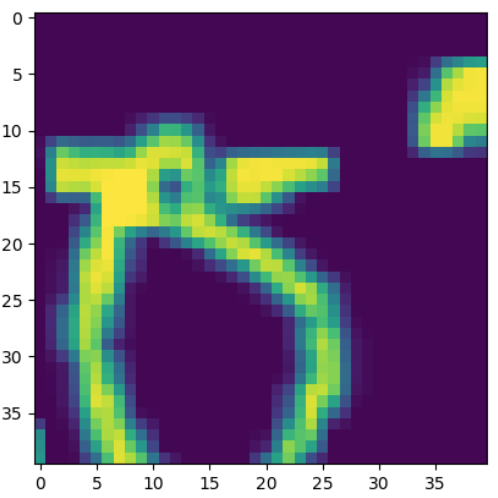
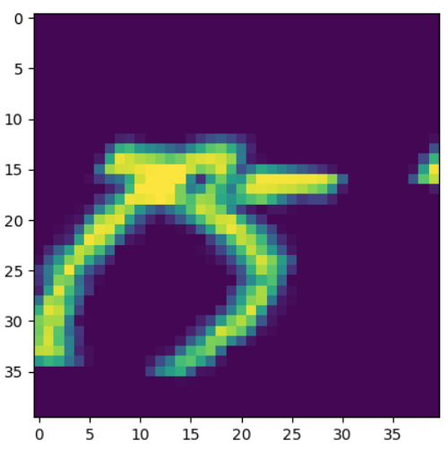
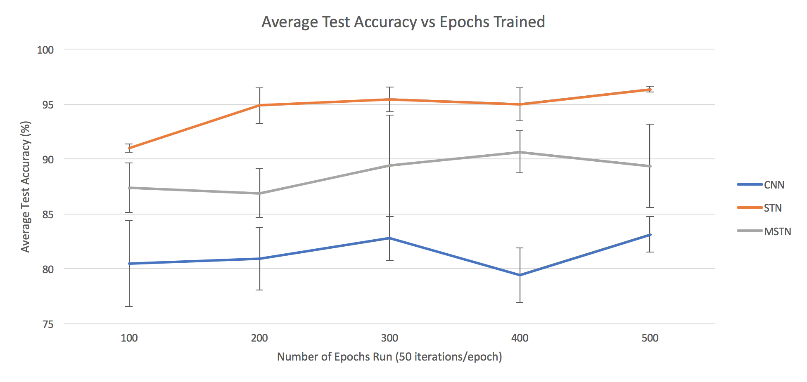

From the Cluttered MNIST dataset, there are 10,000 images for training, 1,000 images for validation, and 1,000 images for testing. During training, each of the STN, CNN, and MSTN networks underwent 3 trials for each of 100, 200, 300, 400, and 500 epochs, using all 10,000 training images. The networks were evaluated during testing using all 1,000 test images, with the metric of counting the corrently identified digits. In this project, the validation images were not used.
As discussed in the Experimental Design section, the STN will attempt to find a transformation such that when it is applied to the initial image, a more identifiable digit will be produced. Below is a set of images which are used in the digit identification network, after the STN transformation is applied. Each image is labeled as whether the digit was correctly identified. These images were produced after 500 epochs of training.
The first network, CNN, uses the orignal image from the Cluttered MNIST dataset, since there is no STN in this network. The other networks show the digit after the first STN transformation is applied.
Networks:
CNN
STN
MSTN
Digit: 9
(Correct)
(Correct)
(Correct)
Digit: 5
(Incorrect)
(Correct)
(Correct)
Digit: 0
(Incorrect)
(Incorrect)
(Incorrect)
The figure below depicts the accuracy of each network accross varying number of training epochs. The figure shows that the usage of STNs in the digit identification networks improve the identification accuracy from the sole CNN. This is expected, as the usage of STNs reduce the clutter and noise in the digit image that goes through the CNN.
The networks were only run for 3 trials at each epoch, but it is apparent that for each number of training epochs, the STN performs the best and the CNN performs the worst. In almost all cases, the error bars of the network performances are even non-overlapping.
